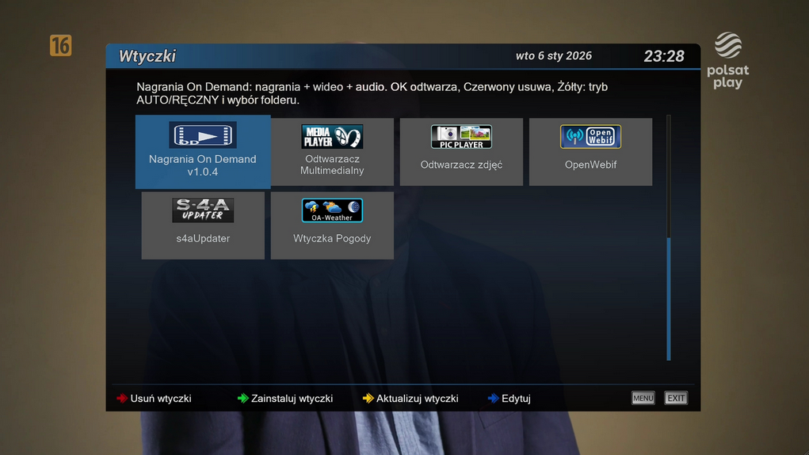
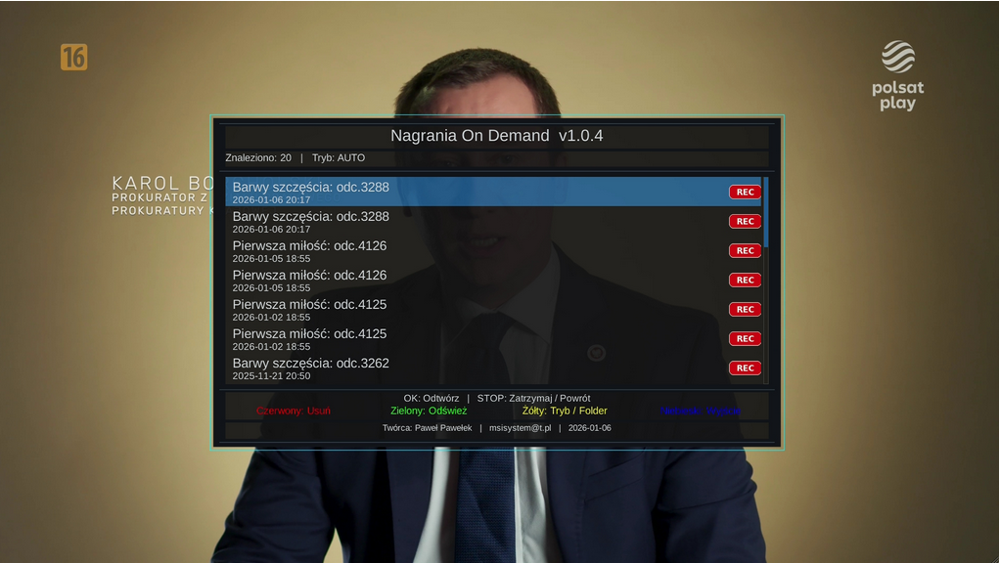
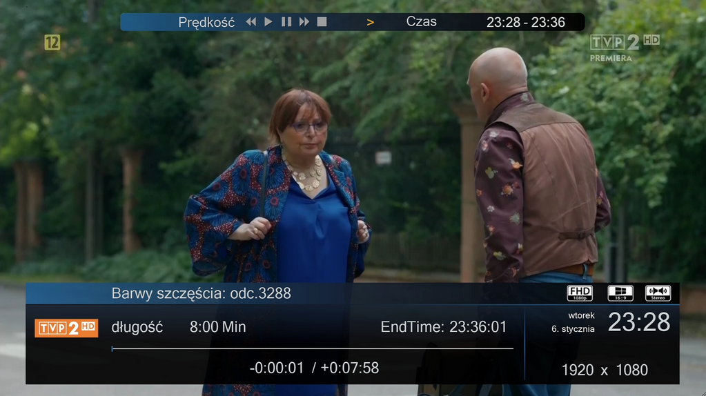
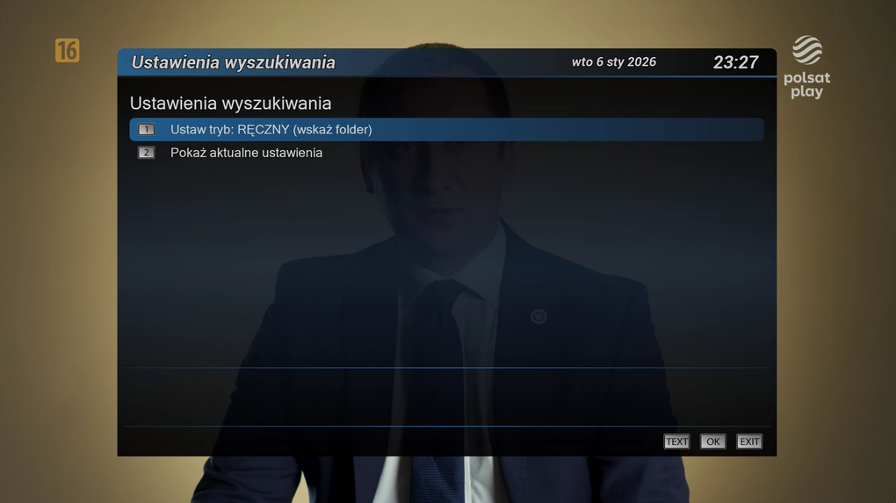
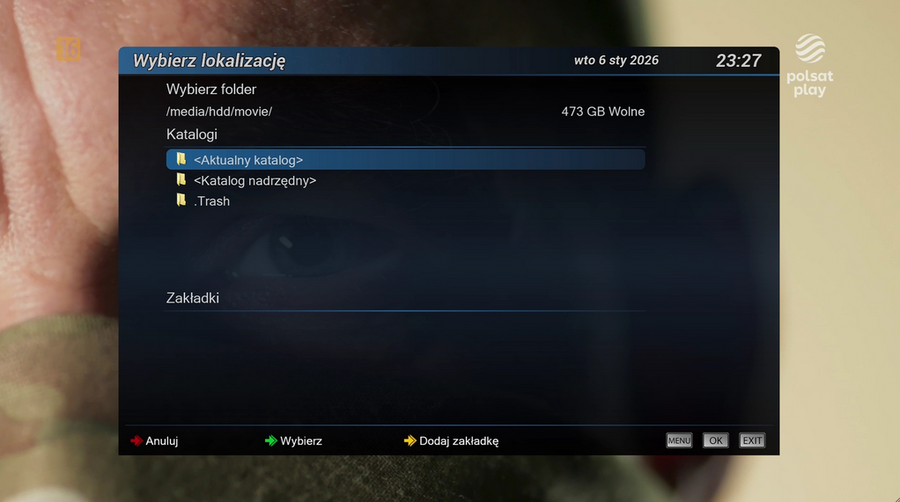
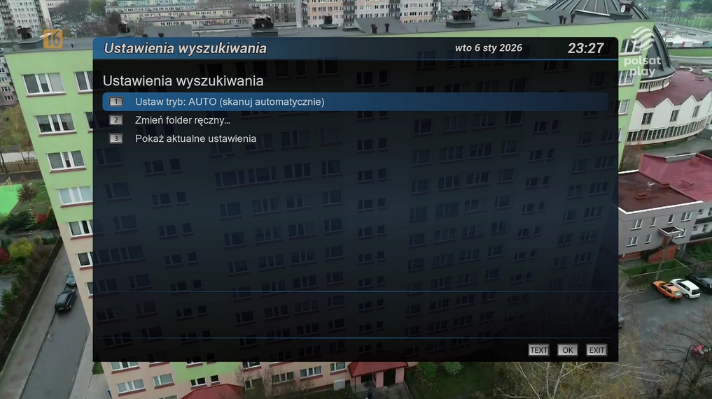

Witam na mojej stronie Paweł Pawełek
Nagrania
Nagrania On Demand 2.0
Wtyczka porządkująca listę nagrań i multimediów w Enigma2: ukrywa pliki techniczne, scala części i pokazuje prawdziwe tytuły.

Do czego służy
Wtyczka porządkująca listę nagrań i multimediów w Enigma2: ukrywa pliki techniczne, scala części i pokazuje prawdziwe tytuły.
Plik: enigma2-plugin-extensions-nagraniaondemand_2.0_all.ipk 14.0 KB
Najważniejsze funkcje
- porządkowanie nagrań
- ukrywanie plików technicznych
- czytelniejszy widok multimediów
Zdjęcia / podgląd





Instalacja pobranego IPK przez FTP
Jeśli pobierasz paczkę ręcznie: wgraj plik IPK do katalogu /tmp, a potem wykonaj instalację w terminalu.
Instalacja IPK z /tmp
opkg install /tmp/nazwa_paczki.ipk